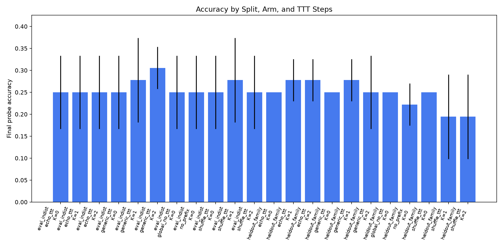
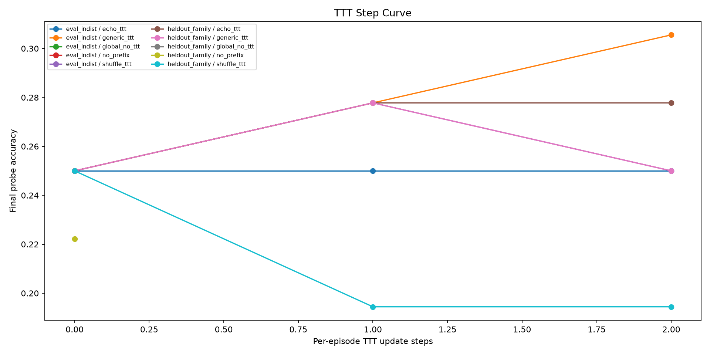
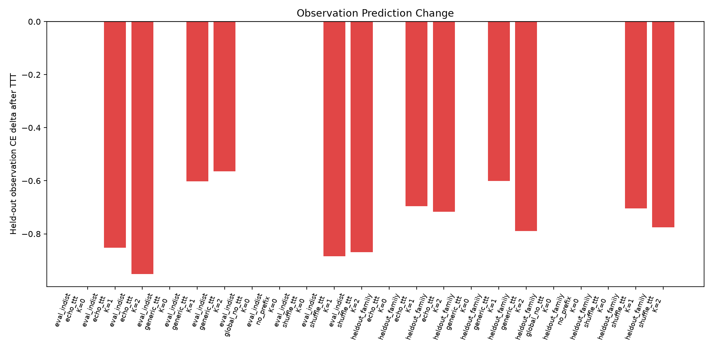
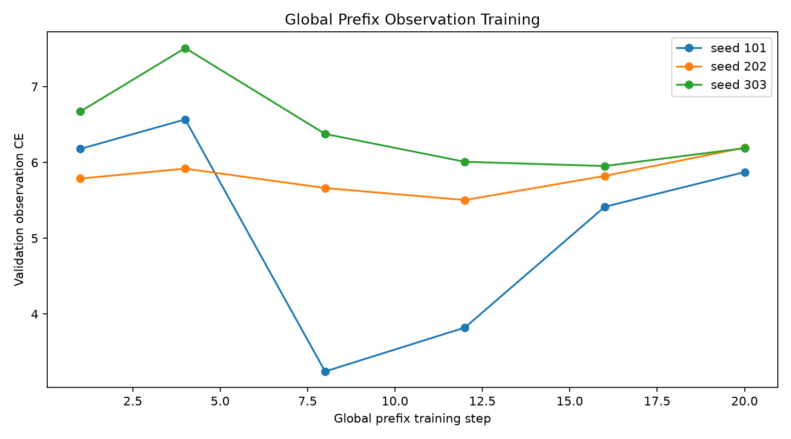

This standalone experiment tests whether a frozen local language model can use temporary per-episode gradient updates on environment-observation prediction to make better later decisions.
Verdict: negative mechanism signal.
Best mean accuracy was 30.6% for generic_ttt on eval_indist at 2 TTT steps.
The primary comparison is global_no_ttt versus echo_ttt and the corrupted
controls shuffle_ttt and generic_ttt. A real mechanism signal requires
true-observation TTT to improve final-probe accuracy and held-out observation
prediction more than corrupted-observation TTT.
Gate readout at the largest tested TTT step:
eval_indist at 2 TTT steps: echo 25.0%, no-TTT 25.0%, best corrupted control 30.6%.heldout_family at 2 TTT steps: echo 27.8%, no-TTT 25.0%, best corrupted control 25.0%.Qwen/Qwen3-4B.4 virtual prefix tokens.25.0%.5.2.101,202,303./workspace/large_artifacts/episodic_echo_ttt.| split | arm | ttt_steps | n | mean_accuracy | std_accuracy | mean_obs_ce_before | mean_obs_ce_after | mean_obs_ce_delta |
|---|---|---|---|---|---|---|---|---|
| eval_indist | echo_ttt | 0 | 36 | 25.0% | 8.3% | 6.312 | 6.312 | 0 |
| eval_indist | echo_ttt | 1 | 36 | 25.0% | 8.3% | 6.312 | 5.46 | -0.852 |
| eval_indist | echo_ttt | 2 | 36 | 25.0% | 8.3% | 6.312 | 5.361 | -0.951 |
| eval_indist | generic_ttt | 0 | 36 | 25.0% | 8.3% | 6.312 | 6.312 | 0 |
| eval_indist | generic_ttt | 1 | 36 | 27.8% | 9.6% | 6.312 | 5.71 | -0.602 |
| eval_indist | generic_ttt | 2 | 36 | 30.6% | 4.8% | 6.312 | 5.747 | -0.565 |
| eval_indist | global_no_ttt | 0 | 36 | 25.0% | 8.3% | 6.312 | 6.312 | 0 |
| eval_indist | no_prefix | 0 | 36 | 25.0% | 8.3% | 6.398 | 6.398 | 0 |
| eval_indist | shuffle_ttt | 0 | 36 | 25.0% | 8.3% | 6.312 | 6.312 | 0 |
| eval_indist | shuffle_ttt | 1 | 36 | 27.8% | 9.6% | 6.312 | 5.428 | -0.884 |
| eval_indist | shuffle_ttt | 2 | 36 | 25.0% | 8.3% | 6.312 | 5.442 | -0.87 |
| heldout_family | echo_ttt | 0 | 36 | 25.0% | 0.0% | 6.174 | 6.174 | 0 |
| heldout_family | echo_ttt | 1 | 36 | 27.8% | 4.8% | 6.174 | 5.477 | -0.696 |
| heldout_family | echo_ttt | 2 | 36 | 27.8% | 4.8% | 6.174 | 5.457 | -0.717 |
| heldout_family | generic_ttt | 0 | 36 | 25.0% | 0.0% | 6.174 | 6.174 | 0 |
| heldout_family | generic_ttt | 1 | 36 | 27.8% | 4.8% | 6.174 | 5.573 | -0.6 |
| heldout_family | generic_ttt | 2 | 36 | 25.0% | 8.3% | 6.174 | 5.385 | -0.789 |
| heldout_family | global_no_ttt | 0 | 36 | 25.0% | 0.0% | 6.174 | 6.174 | 0 |
| heldout_family | no_prefix | 0 | 36 | 22.2% | 4.8% | 6.409 | 6.409 | 0 |
| heldout_family | shuffle_ttt | 0 | 36 | 25.0% | 0.0% | 6.174 | 6.174 | 0 |
| heldout_family | shuffle_ttt | 1 | 36 | 19.4% | 9.6% | 6.174 | 5.47 | -0.704 |
| heldout_family | shuffle_ttt | 2 | 36 | 19.4% | 9.6% | 6.174 | 5.398 | -0.776 |



| seed | step | train_loss | val_obs_ce |
|---|---|---|---|
| 101 | 1 | 1.107 | 6.18 |
| 101 | 4 | 1.276 | 6.569 |
| 101 | 8 | 0.988 | 3.242 |
| 101 | 12 | 0.965 | 3.821 |
| 101 | 16 | 0.969 | 5.416 |
| 101 | 20 | 0.928 | 5.874 |
| 202 | 1 | 1.649 | 5.788 |
| 202 | 4 | 0.809 | 5.919 |
| 202 | 8 | 1.137 | 5.663 |
| 202 | 12 | 0.931 | 5.504 |
| 202 | 16 | 0.3 | 5.823 |
| 202 | 20 | 0.764 | 6.197 |
| 303 | 1 | 1.173 | 6.673 |
| 303 | 4 | 1.148 | 7.511 |
| 303 | 8 | 1.188 | 6.377 |
| 303 | 12 | 0.876 | 6.009 |
| 303 | 16 | 0.91 | 5.954 |
| 303 | 20 | 0.925 | 6.189 |

The load-bearing control is corrupted-observation TTT. The result does not pass that control. True-observation TTT reduces held-out observation CE, but shuffled and generic-observation updates also reduce CE on the same held-out probes. Final-probe accuracy remains near the four-choice chance level and does not separate reliably from the corrupted controls.
The experiment therefore supports a narrow negative conclusion for this tested recipe: a tiny virtual-prefix test-time update can move Qwen's likelihoods, but the movement is not specifically grounded in the true episode dynamics strongly enough to improve decisions.
/workspace/experiments/episodic_echo_ttt/runs/main_episodic_echo_ttt_v1./workspace/experiments/episodic_echo_ttt/analysis/metrics.csv./workspace/experiments/episodic_echo_ttt/analysis/summary_by_arm.csv./workspace/experiments/episodic_echo_ttt/analysis/detail_rows.csv./workspace/large_artifacts/episodic_echo_ttt/checkpoints/main_episodic_echo_ttt_v1.